Action Graph Toolkit
A small set of building blocks that keeps Action Graphs readable as they grow:
- Macros — reusable chains inside one graph.
- Portals — wireless exec links inside one graph.
- Nested graphs — a whole external graph used as one child step.
- Graph input parameters — values passed into a graph at launch.
- Flow nodes — branch, wait, random, loops, and routing helpers.
- Graceful pause — soft suspend at safe boundaries.
- Abort — immediate hard stop.
- Stop Other Graphs — cancel other runs on the same actor.
- On Restored — one-shot hook after state restore.
- Disable node — fast iteration toggle.
Macros
A macro is a local function for an Action Graph: a reusable chain of nodes that lives only inside this specific graph. Use macros to break long, intertwined sequences into short named chains.
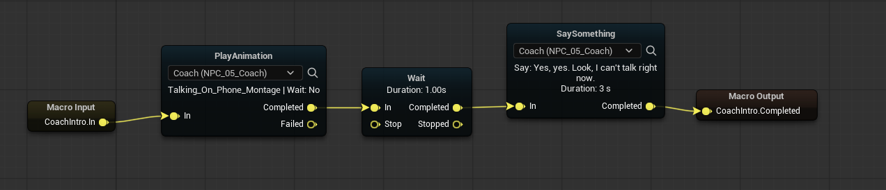
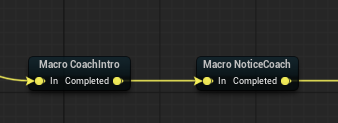
Macro Callenters the matchingMacro Inputbranch and returns through the matchingMacro Output.
- Matching is by ids: same
Macro Id, plus matchingEntry Id/Exit Id.
Portals
Portals are named wireless exec links inside a single Action Graph: trigger Portal In and every Portal Out with the same name fires in parallel. Unlike macros, a portal does not return — it just dispatches flow. Use portals to avoid long exec wires across the canvas and to fan one signal out to several branches at once.
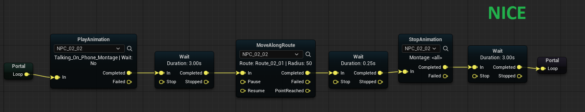
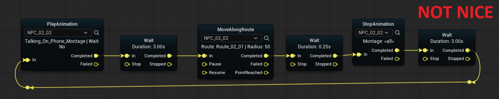
- Names must match exactly.
Nested graphs
A nested graph is a separate Action Graph asset that you launch from a parent graph as a single child step. Unlike macros, which live inside one graph, a nested graph is an external asset, so the same logic can be reused across many parent graphs.
Run Action Graph supports two launch styles:
- Nested / blocking (
Wait For Completion = true)
The parent waits until the child ends, then continues through Completed, Failed, or Aborted.
- Independent / fire-and-forget (
Wait For Completion = false)
The child graph starts as a separate run, and the parent node immediately continues through Completed.
So the same node can be used either as a true nested step or as a convenient way to start another graph without blocking the current one.
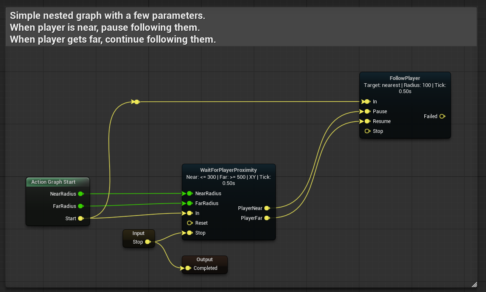
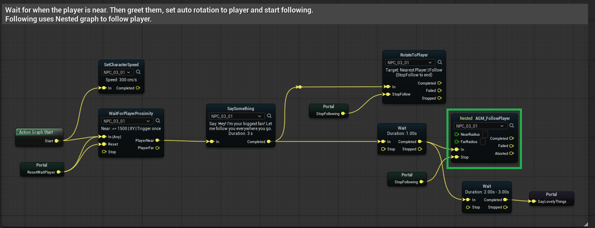
Run Action Graph(in parent) always exposesCompleted/Failed/Abortedoutputs.
- With
Wait For Completionenabled, those outputs mean "child graph finished".
- With
Wait For Completiondisabled,Completedmeans "child graph was launched successfully".
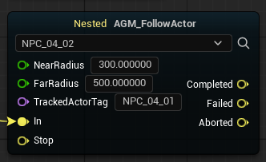
Nested Input(in child) creates extra entry points; each one shows up as an additional input pin on the parent'sRun Action Graphnode.
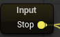
Nested Output(in child) creates extra named output pins on the parent side. They can fire alongside the run, in parallel with terminal outputs.
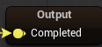
End Nested Graph
Use End Nested Graph inside a child graph to talk back to the parent's Run Action Graph node.
Completed,Failed, orAborted— ends the child run and finishes the parent node on that pin.
- Any custom output id — fires a matching pin on the parent without stopping the child. The nested run keeps going.
This is how Nested Output nodes connect to parent-side pins at runtime.
Participant context passed to the child
Child graphs are not limited to single-participant mode.
- If the child graph uses Single Runtime Participant, the parent passes its current participant actor down to the child.
- If the child graph uses normal participant slots, Scene Director tries to resolve those participant ids from the parent graph's current participant context and passes the matching actors into the child run.
This is useful for reusable child graphs like:
- a two-NPC exchange,
- a guard + target interaction,
- a shared "escort pair" or "conversation pair" module.
In short: the child graph can run with one actor or with several actors, depending on how that child graph is authored.
Nested launch vs root launch
Child graphs started by Run Action Graph:
- do not apply root-graph priority rules
- do not restore from persisted state (
Restore From Stateis off for nested launches)
Persistence and priority apply only to top-level Run Scene Director calls. See Runtime Control.
Graph input parameters
Input parameters are values declared on a graph asset and supplied when the graph starts (mood, speed, target id, etc.). They work both for top-level launches via Run Scene Director (see Basic Usage) and for nested calls — Run Action Graph exposes a pin per declared input.
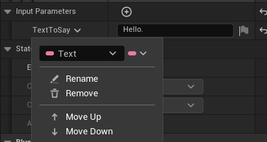
Inside the graph, read a value with Get Parameter: pick a Parameter Id from the declared inputs and connect the result to a task pin of the matching type.
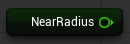
- Values are passed by id; ids must match between the graph declaration,
Get ParameterandMake Scene Director Parameter.
- Unknown ids and type-mismatched values are ignored at launch.
Flow nodes
Common built-in nodes for branching, timing, and routing. Most do not require a participant.
Branch
- Reads a bool and immediately routes to
TrueorFalse.
Wait (Seconds)
- Delays for the given time, then completes.
Random
Picks one weighted output on each activation.
- Outputs are named
Option_1,Option_2, … — one per weight in the array.
Without Replacement(default) — no option repeats until all options have been used once.
With Replacement— every pick is independent; repeats are allowed.
Prebake Random Sequence(default) — precomputes the pick order and persists it throughSaveGame. Interrupted runs continue from the same pending option. Works with State Persistence.
Gate
Like a Blueprint Gate: In passes through to Completed only when the gate is open.
Open/Closeinput pins change gate state.
Start Closed— initial state when the run begins.
- Open/closed state can persist through save/load when persistence is enabled.
Sequence
On each In pulse, fires the next numbered output in order (1, 2, …), then wraps back to 1.
Good for cycling through a fixed ordered list of branches.
For Each (Count)
Counter-style loop.
- Runs the body at most
Counttimes.
- Each iteration needs a new pulse on
Inafter the previous branch finishes (wire the body back to this node).
Loopfires on every step including the last.
All Donefires on the nextInafter the last loop, then the counter resets.
- If
Countis0, onlyAll Donefires on the firstIn.
- Current iteration persists through save/load when persistence is enabled.
Pass Through
Instant In → Completed connector. Use to merge or reroute exec lines without adding logic.
Log
Prints a message to the log/output for debugging graph flow.
Follow Player / Follow Actor
Long-running movement tasks. The participant pathfinds toward a moving target.
Extra input pins:
Pause— pause movement
Stop— end the task
Resume— continue after pause
Output pins:
Completed— target reached or movement finished normally
Failed— movement could not complete (pathing failure, lost target, etc.)
Follow Actor additionally resolves the target by actor tag.
Graceful pause
Use this family to softly suspend graph flow at safe boundaries instead of hard-aborting it. Typical pattern: while the player stays near the NPC, a loop keeps cycling through a portal; once the player walks away, Pause Gracefully is requested, and the next time flow reaches the loop boundary the NPC stops cleanly without finishing the current iteration. When the player returns, Cancel Pause Gracefully clears the request and the loop resumes from the same boundary.
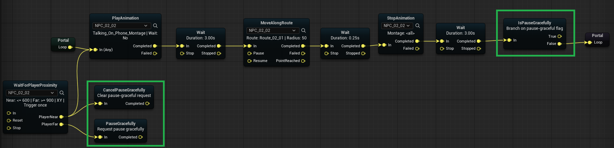
Pause Gracefullyrequests pause mode on the current running graph.
On Pause Gracefullyfires once when pause mode is requested.
Is Pause Gracefullybranches by current pause-request state.
Cancel Pause Gracefullyclears a previously requested pause mode.
If the same graph is launched again while pause is requested, the new launch cancels the pause and resumes the existing run instead of starting a duplicate. See Runtime Control.
Abort
Abort is the hard-stop counterpart to graceful pause: it terminates the active Scene Director run immediately, without waiting for nodes to reach a safe boundary. Use it for emergency exits — failure conditions, scene cancellations, or any moment when the flow must end right now.
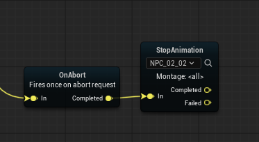
Abortimmediately stops the active Scene Director run.
Clear Persisted State(optional) — also delete this run's in-memory persistence snapshot.
On Abortfires when an abort is triggered, giving nodes one chance to clean up runtime state (cancel timers, release locks, restore world state, etc.).
Stop Other Graphs
Stops every other active Scene Director run that uses the same Single Runtime Participant actor as this node.
- The current run is not stopped.
- Optional
Clear Persisted State— also clear snapshots for each stopped run.
Typical use: an NPC starts a new personal behavior graph and should cancel older graphs still running on that same character.
For subsystem-level stop calls, see Runtime Control.
On Restored
Fires once when the graph run starts from a restored persistence snapshot.
- Does not fire on a normal fresh launch.
- Useful for post-load setup that should run only after resume.
Details: State Persistence — On Restored.
Disable selected nodes
Use node disabling as a fast iteration tool when tuning graph flow. A disabled node skips task execution and auto-routes immediately.
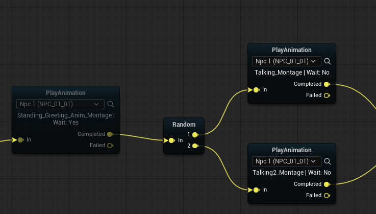
- Hotkey:
EtogglesDisabledfor selected action node(s).
- Routing preference:
Completedif present, otherwise the first declared output (for exampleBranch:True / False).
See also
- World Helpers — related task nodes — anchors, routes, teleport.
- Console Commands — Graph Trace